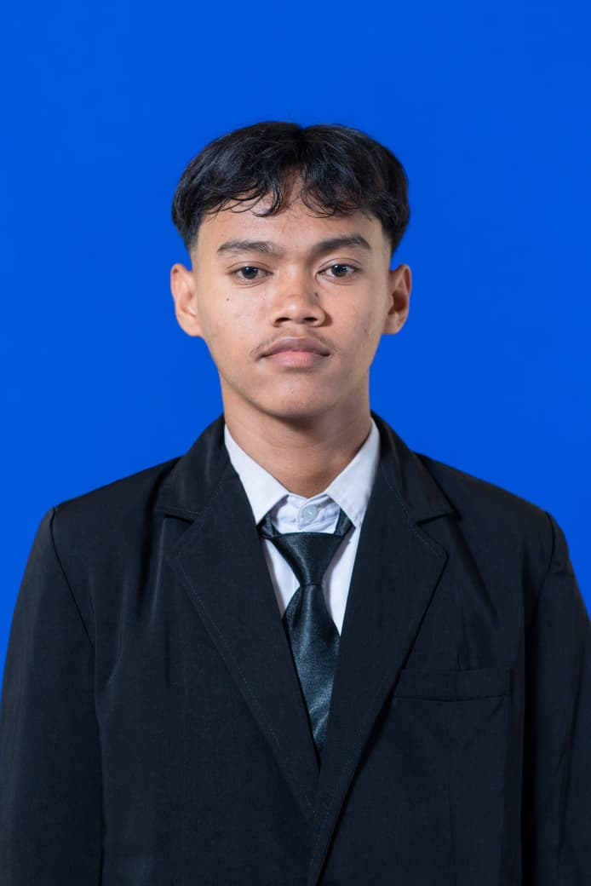

Website Portofolio Pribadi →
Website portofolio responsif dengan mode terang dan gelap. Dibuat dengan bantuan AI sebagai bahan belajar HTML, CSS, JavaScript, dan Git.

Halo, saya Rangga Dwi Andika K. Saya mengerjakan aplikasi web dari database sampai tampilan, dengan fokus pada kecepatan dan kemudahan pakai.
Saya mahasiswa Teknik Informatika yang terbiasa mengerjakan sistem secara utuh: merancang database, membuat backend, lalu menyusun antarmukanya. Di luar kampus saya membuat alat bantu untuk usaha lokal.
S1 Teknik Informatika.
IPA
Aplikasi web untuk usaha lokal
Pengujian perangkat lunak
Pengembangan full-stack
Membangun aplikasi web lengkap dengan login, database, dan dashboard.
Tampilan responsif yang mudah dipakai di HP dan laptop.
Mencari bug dan memastikan fitur berjalan sesuai kebutuhan.
Website portofolio responsif dengan mode terang dan gelap. Dibuat dengan bantuan AI sebagai bahan belajar HTML, CSS, JavaScript, dan Git.
Universitas Negeri Surabaya
Lolos seleksi masuk dan menjadi mahasiswa baru Teknik Informatika angkatan 2026.
Mandiri
Menyusun website portofolio pribadi dengan HTML, CSS, dan JavaScript, lalu mengunggahnya ke GitHub.
Sedang mencari kesempatan magang dan proyek. Kirim pesan, saya balas secepatnya.